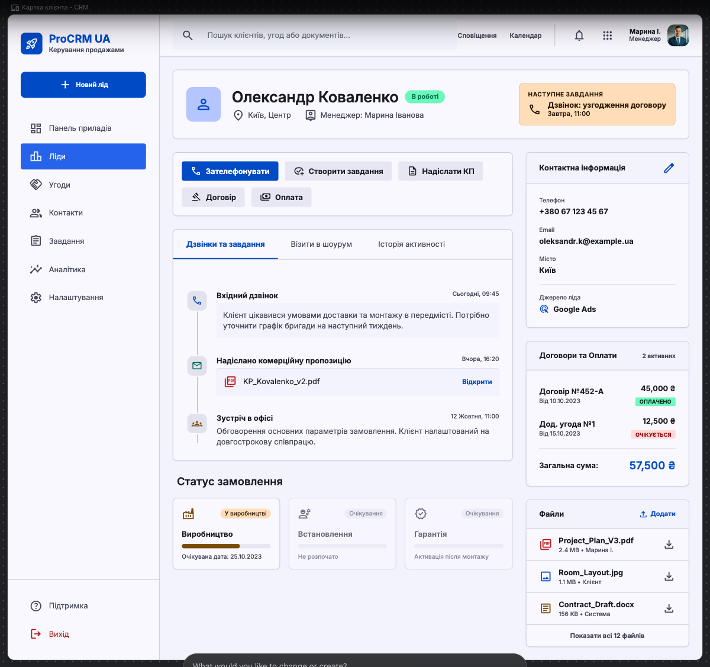

Картка клієнта KOLSS CRM
Адаптація наданого CRM-референсу під фактичний lead-centric workflow і дизайн-систему KOLSS.
Рішення: сприймаємо референс як wireframe. Зберігаємо topbar, sidebar, центральний timeline і праву контекстну панель; візуальну мову повністю переводимо на KOLSS green та наявні нейтральні токени.

Що беремо
Глобальна оболонка
Topbar із пошуком, офісом і користувачем. Sidebar: Дашборд, Ліди, Задачі, адміністративні розділи.
Header клієнта
Ім’я, workflow-статус, офіс, менеджер, джерело, наступна задача і одна primary action.
Центральний timeline
Дзвінки, задачі, шоурум, договори, оплати, файли та системні події в одній хронології.
Права context panel
Контакти, джерело, договори/оплати та файли. Sticky на desktop, accordion або drawer на mobile.
Рекомендована композиція
┌─────────────────────────────────────────────────────────────────────────┐ │ TOPBAR: KOLSS · офіс | глобальний пошук | сповіщення | користувач │ ├──────────────┬──────────────────────────────────────────────────────────┤ │ SIDEBAR │ ← До лідів │ │ │ ┌──────────────────────────────────────────────────────┐ │ │ Дашборд │ │ CLIENT HEADER + STATUS + NEXT TASK + PRIMARY ACTION │ │ │ Ліди │ └──────────────────────────────────────────────────────┘ │ │ Задачі │ ┌─────────────────────────────────┬────────────────────┐ │ │ │ │ QUICK ACTION / TASK COMPOSER │ CONTACTS │ │ │ │ ├─────────────────────────────────┤ SOURCE │ │ │ │ │ FILTERED ACTIVITY TIMELINE ├────────────────────┤ │ │ │ │ │ CONTRACT/PAYMENTS │ │ │ │ │ ├────────────────────┤ │ │ │ │ │ FILES │ │ │ │ └─────────────────────────────────┴────────────────────┘ │ └──────────────┴──────────────────────────────────────────────────────────┘
Ключові адаптації
| Референс | KOLSS CRM |
|---|---|
| Яскравий синій accent | KOLSS green #2D4A3E, soft #EEF5F1 |
| Усі action-кнопки одночасно | Одна основна дія відповідно до workflow-статусу |
| Угоди як окремий розділ | Єдина картка ліда без дублювання проєкту |
| Розділені історії | Один timeline із фільтрами за типом події |
| Постійна права панель | Sticky desktop; drawer/accordion на вузьких екранах |
Primary action за статусом
Новий → Взяти в роботу → Записати дзвінок → Запланувати шоурум → Завершити візит → Запланувати/підписати договір → Передоплата → Виробництво → Постоплата/встановлення → Гарантія.
Що не переносимо
- синю універсальну CRM-естетику;
- великий постійний набір кнопок;
- окремі «угоди/проєкти», що дублюють lead-centric workflow;
- великі неактивні картки майбутніх етапів;
- технічний UUID користувача в topbar.
Пріоритет реалізації
- App shell: topbar + sidebar.
- Двоколонкова картка клієнта.
- Timeline + quick action/task composer.
- Редагування контактів і керування файлами.
- Responsive drawer/accordion для правої панелі.